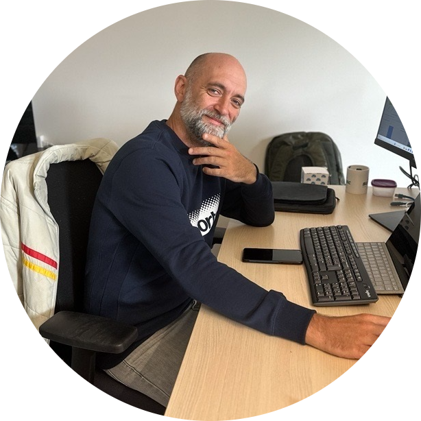

L'expertise d'un géomaticien indépendant au service des collectivités et des entreprises, à La Réunion et au-delà.
Geomark SIG Solutions est fondée par Robin Maume, géomaticien passé par la topographie de terrain, l'administration de SIG de réseaux techniques, le géomarketing international et le développement d'outils cartographiques web.
Cette polyvalence technique permet d'aborder un projet dans sa globalité, sans se limiter à un seul logiciel ou une seule étape de la chaîne géomatique.
Basée au Tampon (La Réunion), l'entreprise intervient sur l'île, à Mayotte et à distance en métropole.

Chaque livrable respecte les normes et référentiels en vigueur (RGF93, DT-DICT, DREAL) : la conformité n'est pas une option.
Documentation, formation et transfert de compétences : vos équipes restent autonomes une fois la mission terminée.
Intervention rapide sur La Réunion et Mayotte, suivi à distance pour la métropole : réponse sous 48h.
Données sensibles (réseaux, patrimoine) traitées avec la discrétion et la traçabilité qu'exigent les cadres réglementaires.
Présentez-nous votre projet, sans engagement.